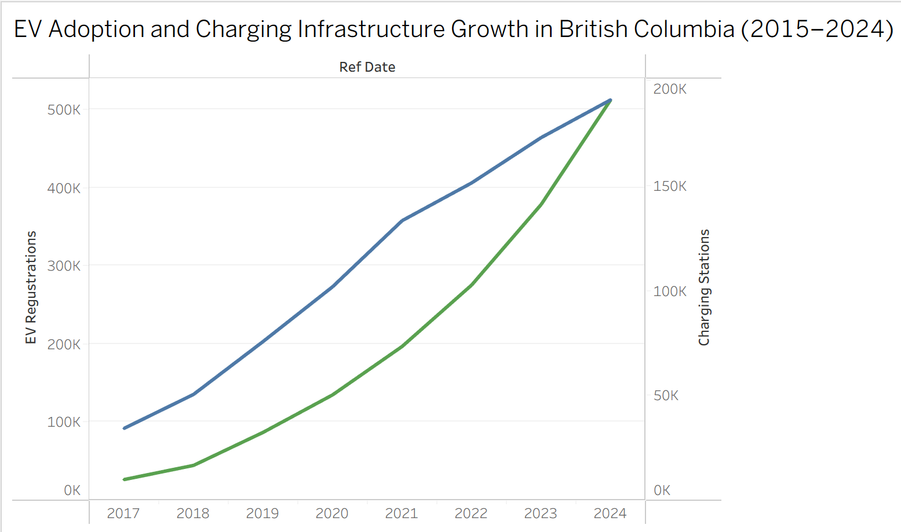
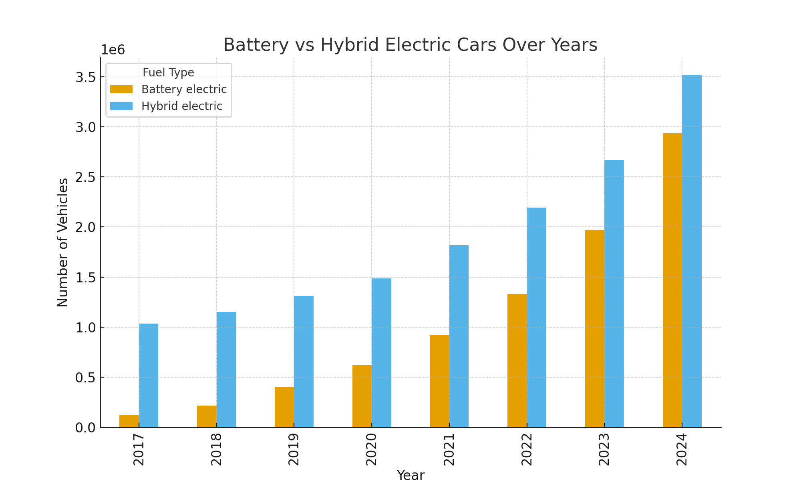
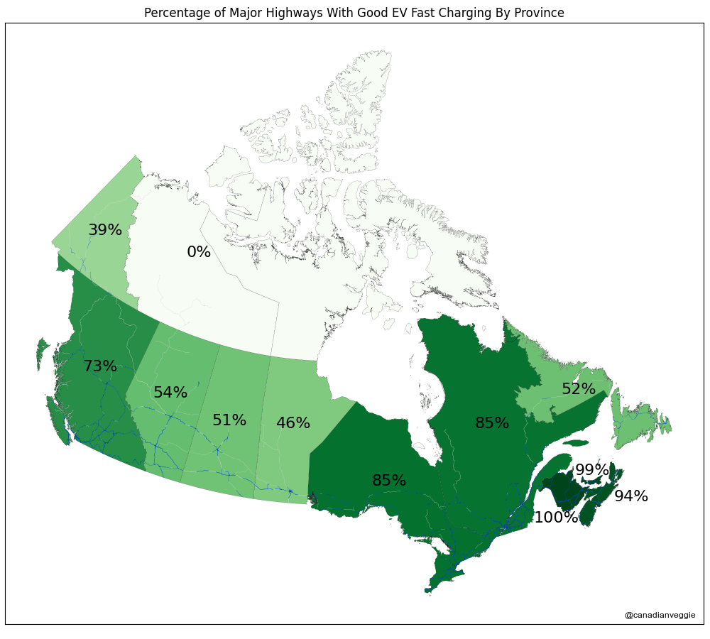
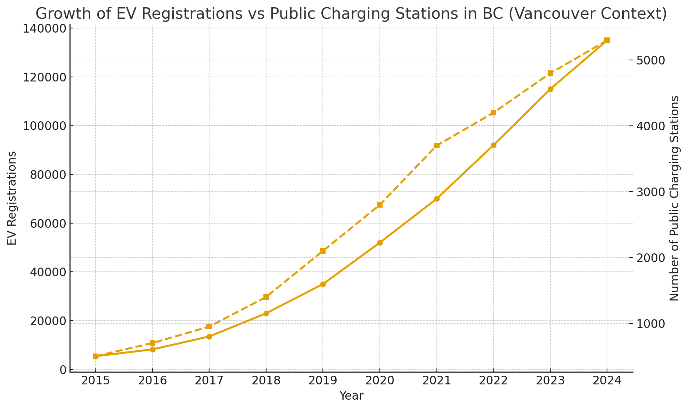

BC EV Registrations vs Public Charging Stations
Dual-axis line chart showing EV registrations and public charging station counts in British Columbia from 2017 to 2024.
Battery vs Hybrid Electric Vehicles
Bar chart comparing battery electric and hybrid electric vehicles over the years.
Fast Charging Coverage by Province
Map showing the percentage of major highways with fast charging coverage in each province.
EV Registrations vs Public Charging Stations (Alternative View)
Another version of the BC EV vs public charging chart. This can be used later for comparison or replaced with an interactive visualization.
